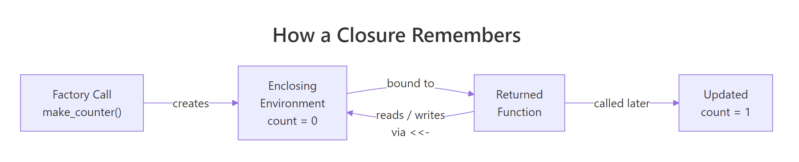
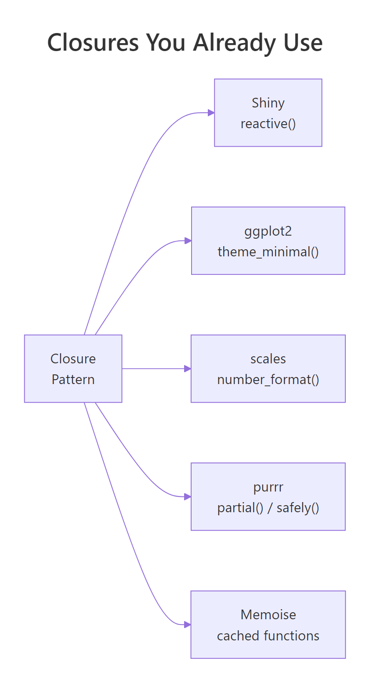
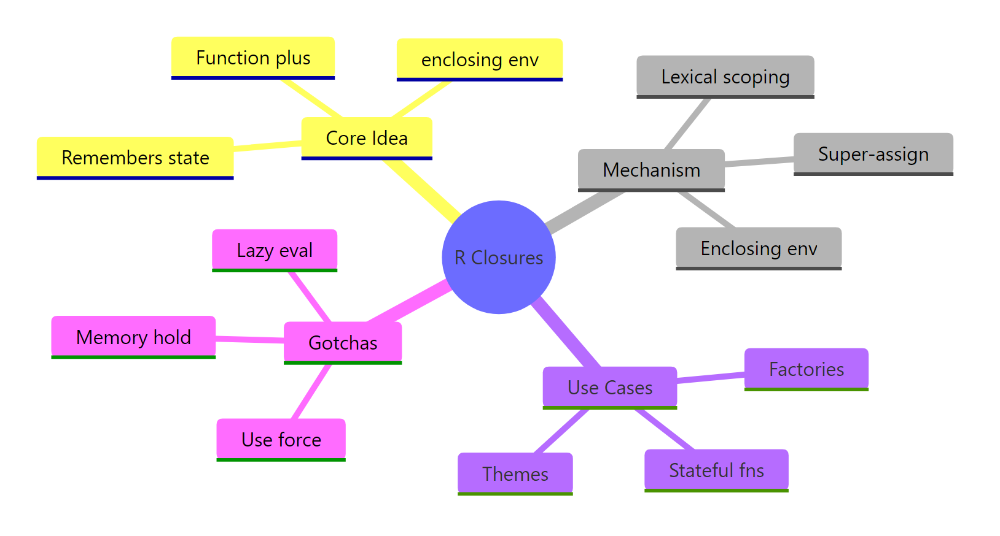

R Closures: The Pattern Behind Shiny Reactive Logic and ggplot2 Themes
A closure is an R function that carries its defining environment with it, so the variables that existed when it was created stay alive every time you call it later. That single idea powers Shiny's reactive(), ggplot2's theme functions, and every function factory in the tidyverse.
What is a closure in R, really?
The fastest way to feel closures click is to build one. The function below, make_counter(), returns another function. Each counter you create then remembers its own running total even though the original make_counter() call has long since finished. If you've ever wondered how Shiny's reactive() "remembers" its last value between button clicks, this six-line block is the whole trick.
Three things just happened. First, make_counter() created a local variable count set to 0, then returned a new function. Second, that returned function still has access to count every time you call it later, even though make_counter() itself has finished running. Third, counter_a and counter_b each got their own copy of count, which is why they ticked up independently. A closure is exactly that combination: a function plus the environment it was born in.
Try it: Write a function ex_make_greeter(salutation) that returns a function which, given a name, pastes the salutation before the name followed by "!". Prove it works for two different salutations.
Click to reveal solution
Explanation: salutation lives in the environment created by each call to ex_make_greeter(). The returned function keeps a pointer to that environment, so hello and hola each remember the salutation they were built with.
How does R remember a function's environment?
Every R function carries an invisible field called its enclosing environment, the environment where the function was written. When the function runs and needs a variable it didn't define itself, R walks outward from the enclosing environment one link at a time until it finds the name (or gives up with an "object not found" error). That walk is lexical scoping.
For a closure, the enclosing environment is the little world created by the outer factory call. You can inspect it directly.
The returned function's environment contains exactly one variable, count, and its current value is whatever counter_a last left it at. That's why counter_a() and counter_b() couldn't interfere with each other: each got its own environment with its own count.

Figure 1: How a returned function keeps a live pointer to the environment where it was created.
The diagram captures the whole mental model. The factory call creates a fresh environment holding the local variables. The returned function is handed a pointer to that environment. When you later call the function and use super-assignment, R walks up from the function body into the enclosing environment and rewrites the value there, which is why the next call sees the update.
Try it: Write a tiny factory ex_capture(x) that returns a function taking no arguments and returning x. Then prove that changing the outer x after calling the factory doesn't affect the captured value, by reading the environment of the returned function.
Click to reveal solution
Explanation: x is a local variable of the factory call, so every call to ex_capture() gets a new environment holding its own x. The returned function reads that x when called.
What is a function factory, and when should you use one?
A function factory is a function whose only job is to return another function. You feed the factory configuration (how the returned function should behave), and you get back a specialised tool you can call cheaply and repeatedly. The factory runs once; the returned function runs many times.
Here is a factory that builds power functions, one that squares, one that cubes, one that computes any power you like.
power_of() was called twice and immediately forgotten, but the two functions it returned are still specialised, each remembering its own exponent. square(1:5) is shorter, clearer, and a tiny bit faster than writing sapply(1:5, function(x) x^2) because the exponent is already baked in.
When should you reach for this pattern? Any time the "configuration" step is more expensive than the "use" step. Fitting a statistical model once and returning a predictor function. Compiling a regular expression once and returning a matcher. Loading a reference table once and returning a lookup. Setting up a theme once and returning a reusable plot modifier.
Try it: Write a factory ex_make_discounter(pct) that returns a function taking a price and returning the discounted price. Build a 10%-off and a 25%-off discounter and test each.
Click to reveal solution
Explanation: pct is captured in the enclosing environment of the returned function. Each discounter remembers its own percentage without needing it passed in on every call.
Where are closures hiding in code you already write?
Once you recognise the pattern, you'll see it everywhere in the R ecosystem. Many functions you already use return new functions, and all of them are closures over configuration you handed them a moment ago.

Figure 2: The closure pattern shows up in Shiny, ggplot2, scales, purrr, and memoise, all of them build functions that remember configuration.
The clearest example is a ggplot2 theme generator. When you call theme_minimal(base_size = 14), the result is essentially a bundle of plot modifications with the size baked in. You can write the same kind of factory yourself, one that captures brand colours and a base size, and returns a theme you can drop onto any plot.
theme_brand() is a closure factory. The inner expression that builds the theme captures primary and base_size from the enclosing environment, and the returned theme carries those choices with it. Swap the arguments and you get a different theme, without writing a new function.
The same trick builds a scales-style formatter. Here is a tiny currency formatter factory that remembers the symbol and digit count you asked for.
Both usd and eur are closures. Each captured its own symbol and digits, so you can pass either function to scale_y_continuous(labels = usd) without rewriting formatting logic for every plot. That is exactly how scales::label_dollar() works under the hood.
reactive() is the same pattern at larger scale. Each reactive({ ... }) call builds a closure over an invisible environment that caches the last computed value and its dependencies. If you understand the counter from the first section, you already understand how reactives remember things between button clicks, the only difference is that Shiny adds dependency tracking on top.Try it: Write a factory ex_make_labeller(prefix, suffix) that returns a function which wraps any character vector with the prefix and suffix. Build one that wraps values in square brackets and another in angle brackets.
Click to reveal solution
Explanation: prefix and suffix are captured once and applied to any input. This is the same pattern used by ggplot2 labeller() and scales formatters.
What are the three closure gotchas that bite everyone?
Closures are elegant, but R's lazy evaluation creates three traps that almost every new user stumbles into. Knowing them up front saves hours of debugging.
The first trap is the lazy evaluation of factory arguments. When you call make_power(2), R does not immediately evaluate 2, it stores an unevaluated promise that says "evaluate 2 the first time you need it." If you build several closures in a loop and reuse the loop variable, all of them will end up sharing whatever value the variable has after the loop ends.
All three calls returned 10000. The bug is that exponent inside each closure is a promise pointing at e in the outer environment, and by the time you actually call the closures, e has finished the loop and sits at 4. Every closure sees the same final value.
The fix is force(). Calling force(exponent) inside the factory evaluates the promise right away, turning it from "a reference to e" into "the actual number 3." From that moment on, the closure captures a concrete value, not a pointer to a live variable.
Now each closure locked in the exponent that was live when make_power_good() was called. force() is the single most important habit for writing correct function factories, if you're building closures in a loop, assume you need it.
The third trap is more subtle: a closure keeps its entire enclosing environment alive, which means any large object that happened to be local in the factory also stays in memory for as long as the returned function exists. If you build a closure inside a function that loaded a 500MB data frame, that data frame is pinned in RAM even after the factory returns, the returned function still has a pointer to it, even if it never uses it. If that matters, delete the large object inside the factory with rm() before returning the closure.
Try it: The factory below has the lazy-eval bug. Fix it by adding one line, then build three adders and verify they produce 11, 12, and 13 when called with 1.
Click to reveal solution
Explanation: force(delta) evaluates the promise immediately, so each closure captures the concrete value of d that was passed in. Without it, every closure would see d = 12 once the loop finishes.
How do you inspect a closure's environment?
When a closure misbehaves, the fastest fix is to open it up and look inside. R gives you a small but powerful toolkit for exactly that: environment(), ls(), get(), and environmentName(). Together they let you enumerate every variable a closure captured and read its current value.
Four calls revealed everything. counter_a captured one variable (count, currently 3). square captured exponent = 2. And the parent of counter_a's environment is the global environment, which is where make_counter was defined, exactly matching the lexical rule.
force() will fix.Try it: Use environment() and get() to read counter_b's current count without calling the counter. Then call counter_b() once and re-read the value to confirm it changed.
Click to reveal solution
Explanation: environment(counter_b) returns the exact environment created by the make_counter() call that built counter_b. get("count", envir = ...) reads the value without triggering the update that calling counter_b() performs.
Practice Exercises
These exercises combine multiple ideas from the tutorial. Use distinct variable names so they don't collide with tutorial state.
Exercise 1: Stateful bank account
Write a factory make_account(balance) that returns a list of three closures: deposit(x), withdraw(x), and get_balance(). All three should read and write the same internal balance variable. Create two independent accounts and prove they don't share state.
Click to reveal solution
Explanation: Each call to make_account() creates a fresh enclosing environment with its own balance. All three inner functions are closures over the same environment, which is why deposit() and get_balance() see the same value. acct_a and acct_b don't interfere because each got its own environment.
Exercise 2: Fix the lazy-evaluation bug
The factory below has the lazy-evaluation bug from the gotchas section. Fix it so that multipliers[[1]](10), multipliers[[2]](10), and multipliers[[3]](10) return 20, 30, and 40 respectively.
Click to reveal solution
Explanation: force(factor) evaluates the promise the moment the factory runs, locking in the concrete value of f that was passed in. Without it, all three closures point to the same live f, which equals 4 by the time you call them.
Exercise 3: Build a logged(fn) function operator
Write a function logged(fn) that takes any function and returns a list with two things: a wrapped version of fn that records each call, and a get_log() function that returns a data frame of what's been logged. Each log entry should capture the input passed in and the result returned. You only need to handle single-argument functions.
Click to reveal solution
Explanation: Both wrapped and get_log are closures over the same log_entries list. wrapped uses <<- to append to it, and get_log reads it. This is a "function operator", a function that takes a function and returns a modified one, and it's exactly how purrr::safely() and memoise::memoise() work internally.
Complete Example
Let's tie everything together with a single, practically useful factory: a running-statistics calculator. You hand it nothing up front, and it returns a function that you can feed new observations one at a time. Each call updates the internal state and returns the current count, mean, and variance.
Every call updated the internal n, mean, and M2 in the closure's enclosing environment using super-assignment, then returned the current statistics. Nothing outside the factory can see those variables, they are effectively private state. This is genuinely useful: you can use rs() as a streaming mean calculator without ever building a growing vector in memory, which matters when you're processing millions of observations.
The same three pieces appear in every real closure: a factory that sets up private state, one or more inner functions that read and write that state, and returned functions whose power comes from the environment they were born in. Once you see it here, you'll see it in memoise::memoise(), in Shiny reactives, and in purrr adverbs.
Summary

Figure 3: The R closure toolkit at a glance, the core idea, the mechanism, the use cases, and the gotchas.
| Concept | What it means | When you've used it |
|---|---|---|
| Closure | A function bound to the environment where it was created | Every function that captures a variable from an enclosing scope |
| Enclosing environment | The environment R walks to when a function needs an outside variable | Inspect it with environment(fn) |
| Function factory | A function that returns another function, pre-configured with captured data | scales::label_dollar(), purrr::partial(), memoise::memoise() |
| Super-assignment | Writes to the nearest enclosing binding, not the current scope | Giving closures mutable state |
force() |
Evaluates a promise immediately, locking in its value | Always, when building closures in a loop |
environment(fn) |
Returns the enclosing environment of a function | Debugging "why does my factory return the wrong thing?" |
The mental model that makes every closure problem simple: a closure is a function plus a pointer to a private environment. Creating a closure creates a new environment; calling the closure reads from and writes to that environment; inspecting environment(fn) lets you see exactly what it captured.
References
- Wickham, H., Advanced R, 2nd Edition. Chapter 10: Function factories. Link
- Wickham, H., Advanced R, 2nd Edition. Chapter 7: Environments. Link
- Wickham, H., Advanced R, 2nd Edition. Chapter 6: Functions (lazy evaluation and
force()). Link - R Core Team, R Language Definition, Section 4: Functions and function calls. Link
- rlang,
fn_env(): Return the closure environment of a function. Link - Welford, B. P. (1962), "Note on a method for calculating corrected sums of squares and products." Technometrics, 4(3), 419–420.
- scales package,
label_dollar()reference, an example of a closure factory in production use. Link - memoise package, CRAN reference for
memoise(), another production closure factory. Link
Continue Learning
- R Environments, the mechanism closures rely on. Read this if the enclosing environment diagram felt mysterious.
- R Lexical Scoping, the rule that decides where R looks up variables. Closures are the most common place lexical scoping shows up in practice.
- R Function Factories, a deeper tour of factory patterns, including multi-argument factories and factories that return lists of functions.